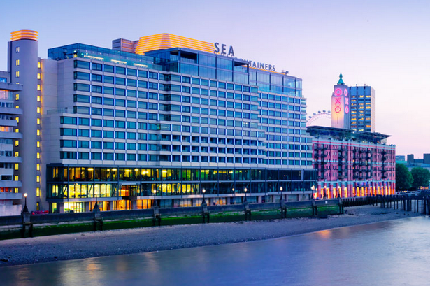
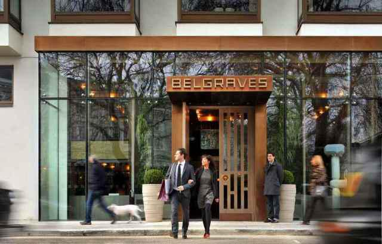

Mondrian at The Sea Containers
Belgraves Hotel - a Thompson Hotel
(Click on hotel names to vist their websites)
My Hotel Notes
The Mondrian is a super trendy, very cool hotel with amazing energy. Their cocktail bar is award winning and their rooms are tiny, yet superb. You will be located on the waterfront side of London near The Eye and a bunch of restaurants and shops too. To get to the main side of London you just cross one of the many pedestrian-friendly bridges. We loved our bridge strolls because the views are incredible and you get lots of exercise! Tube stations nearby too. Really great staff at this hotel. The restaurant is totally vegan-friendly -- just talk to your waiter -- their salads were ah-mazing -- and the view of the waterfront and sleek interior is so fun. And there is a giant mini replica of the Titanic when you walk in the lobby. Oh and they have a movie theater showing recent movies! I would stay there again for sure!
We only stayed in the Thompson Belgraves Hotel for one night.One of the most beautiful hotel rooms I have ever stayed in with sleek gray hardwood floors, beautiful views from the windows, modern furnishings, giant marble bathroom - and a bathtub with a view. Add a kitchen and I could basically live there. The bed was dreamy and perfect. The lobby has so much energy and the surrounding neighborhoods are stunning.
We ate in the restaurant for breakfast and adored it. The menu for dining and room service has items with healthy spins -- superfood salads and such. And vegan requests are NO problem. The head chef, Sophie Michel, is AMAZING. She totally gets it. And she has been a private chef for Leonardo DiCaprio in the past, so there's that. Sophie is talented and has an *award winning* almond milk based porridge on the breakfast menu. Loads of fresh juices and fruit too. The Thompson Belgraves is a luxury hotel, but if you are looking for a splurge in one of London's most prestigious neighborhoods, go for it, you will not be disappointed.

Mondrian Hotel

Belgravis Hotel
Back To Home
What To Eat
Places To Visit
My Visit To Chelsea Football Club Stadium